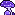
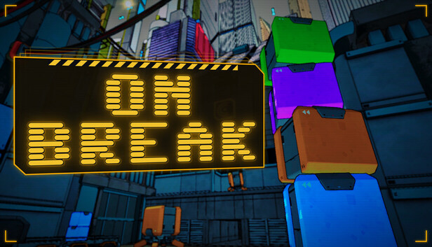
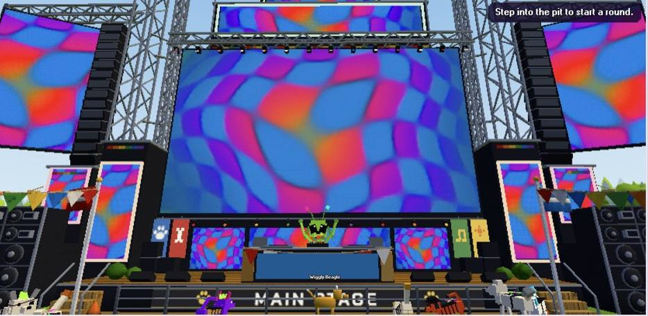
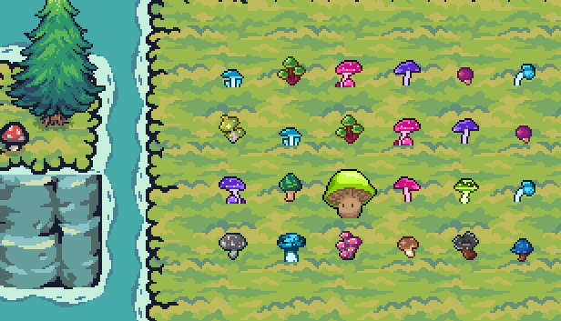
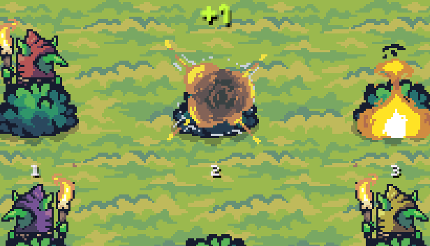
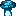
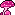
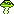

Coming Q1 2027 · Steam

GAMES

On Break
Fresnel Labs is hiring Box Stacking Technicians. Time each drop, match colors and spend your pay on strange office decorations that rewrite the rules of the job.
On purpose. We think the world is more interesting with more strange, funny, surprising things in it, so we make them, and we hope each one leaves it a little better than we found it.


Fresnel Labs is hiring Box Stacking Technicians. Time each drop, match colors and spend your pay on strange office decorations that rewrite the rules of the job.

Make a dog and hang out at a daytime music festival in the park, with 28 minigames.

Our little test game: eat mushrooms and wear every one as a tail. Don't bite it.

Bop the torch goblins before they light the fire. 30-second rounds, three lives.
Something new is sprouting. Follow along on Discord.



Make a dog and hang out at a daytime music festival in the park. Dance at the main stage, chat, and jump into 28 minigames for Bones and things to wear.
Our little test game: steer the mushroom guy around the grid, eat mushrooms and wear every one as a tail. Don't bite it.
Our second test game: torch goblins pop out of the bushes, bop them before they light the fire. 30-second rounds, three lives, and the goblins get faster as you go.
themushroomdevs@gmail.com
Press, business or just a hello. We're quickest on Discord.